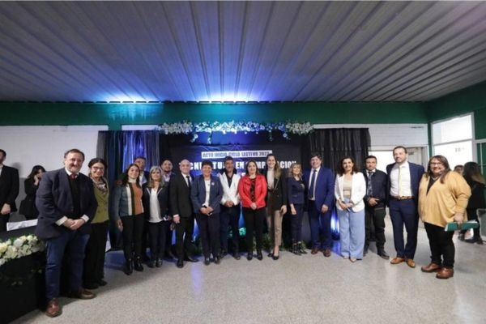
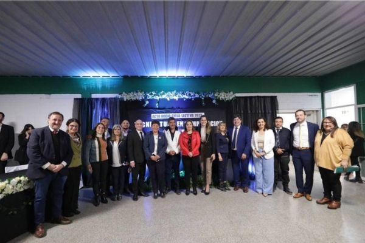

Nuestra Inauguración
El 29 de Agosto de 2023, en la tarde, en la ciudad de Alderetes se vivió un importante acontecimiento de índole educativa: se dio apertura al ciclo lectivo de la Tecnicatura Superior en Computación y Redes, que se dicta actualmente en la Extensión Áulica Alderetes del Instituto de Enseñanza Superior Integración de las Américas, que funciona en las instalaciones de la Escuela Nº 110 Gobernador Celedonio Gutiérrez.
Esta nueva carrera es producto de las gestiones de referentes del Municipio de Alderetes, quienes llevaron a cabo un trabajo articulado con la Provincia, posibilitando así su aprobación por parte del Ministerio de Educación.
El acto de inauguración contó con la presencia de autoridades provinciales y municipales, entre ellos: el Ministro de Educación, Juan Pablo Lichtmajer; el Ministro de Interior, Miguel Acevedo; el Intendente local, Aldo Salomón; la legisladora y presidenta de la comisión de Educación, Graciela Gutiérrez; la Secretaria de Educación, Isabel Amate Pérez; el secretario de Fortalecimiento a la Gestión Escolar, José González; el Secretario de Bienestar Educativo, Marcelo Romero; el Secretario de Gestión Administrativa, Esteban Medina; la Directora de Educación Superior y Artística, Adriana Cuello y la rectora del IES “Integración de las Américas”, Dora Soria.
Nuestra directora del IES, Dora Soria cerró éste acto inauguratorio diciendo que “El IES Integración de Las Américas celebra con inmeso placer el tener una nueva carrera muy añorada desde hace muchos años. Hoy podemos concretar una signifactiva oferta de nivel superior como lo es la de Computación y Redes, algo histórico, un punto de inflexión para nosotros”. Sobre la inserción de los futuros egresados en el mercado laboral, detalló que “Vamos a articular con todas las organizaciones dedicadas a la producción de bienes o de servicios y vamos a fortalecer el entramado social al ofrecer recursos humanos altamente calificados, genuinos que contribuirán al desarrollo de esta comunidad”.
 
